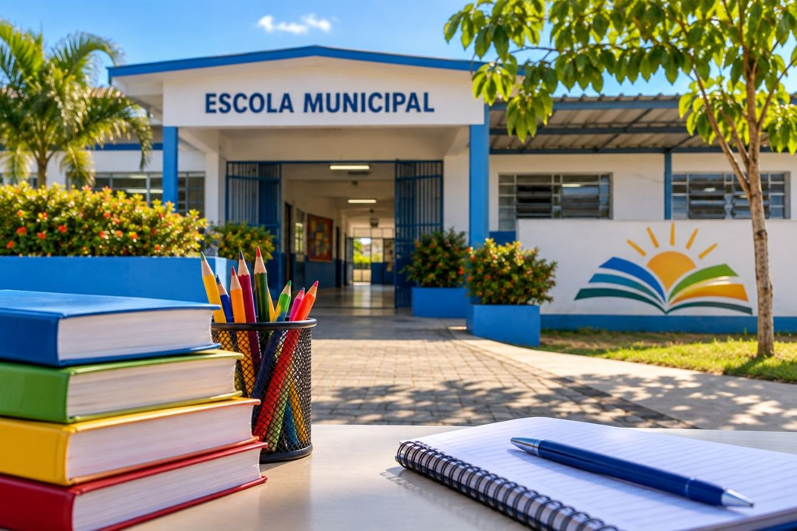

EDUCAÇÃO
Projeto Escola Mais Legal define novas ações para escolas de Pedro Canário
06/09/2026 às 23:32

CATEGORIA: EDUCAÇÃO
TEXTO:
Representantes de instituições públicas, profissionais da educação e integrantes da comunidade escolar participaram de uma nova reunião do Projeto Escola Mais Legal, em Pedro Canário.
O encontro aconteceu na EMEFTI São João Batista, no bairro Camata, e teve como foco o acompanhamento de diferentes áreas da educação municipal. Entre os assuntos discutidos estiveram aprendizagem, alimentação escolar, frequência dos estudantes, estrutura das unidades e ações de proteção às crianças e adolescentes.
Durante a reunião também foram apresentados indicadores da unidade escolar. Entre os dados divulgados estão o índice de aprovação no ano letivo de 2025 e ações de acompanhamento de estudantes com faltas.
O projeto busca aproximar escolas, famílias e instituições públicas, além de identificar necessidades e definir medidas para melhorar o ambiente escolar e o atendimento aos estudantes.
FONTE: TCJ News
URL_FONTE: https://tcjnews.com.br/assembleia-do-escola-mais-legal-define-acoes-para-unidades-de-ensino-de-pedro-canario
Fonte: Redação PCanário